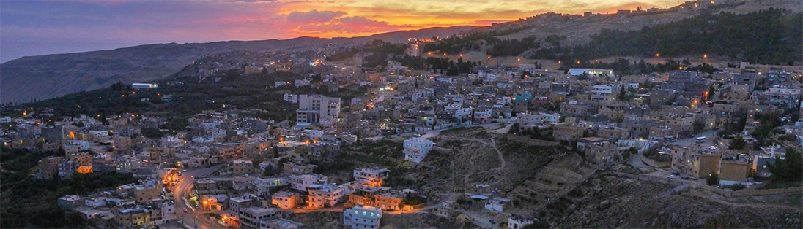

Al-Tafulla is a serene and charming rural city in Jordan, surrounded by beautiful hills and rich farmland. Known for its traditional lifestyle and agricultural practices, Al-Tafulla reflects the beauty of Jordan's countryside, where the land and people have been connected for generations.
The city is a haven for nature lovers and anyone seeking a slower pace of life. Its rolling hills and lush fields provide a perfect escape from the hustle and bustle of urban areas, offering a glimpse into a simpler, more peaceful way of living. Al-Tafulla is not just a place; it is an experience, with its welcoming community and breathtaking views of the Jordanian countryside.
